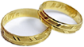

Quem somos?
Uma empresa com estrutura e profissionais capacitados para fotografar eventos sociais de alto nível. Atendendo Joinville e região dispomos de equipamentos de qualidade e know-how de anos de mercado.
O Que fazemos?
Eternizar sonhos. Registrar os momentos mais importantes e marcantes de uma vida. O instante mágico, o dia mais esperado, o nosso trabalho consiste em guardar e cuidar dessas emoções captadas com sensibilidade e profissionalismo.
